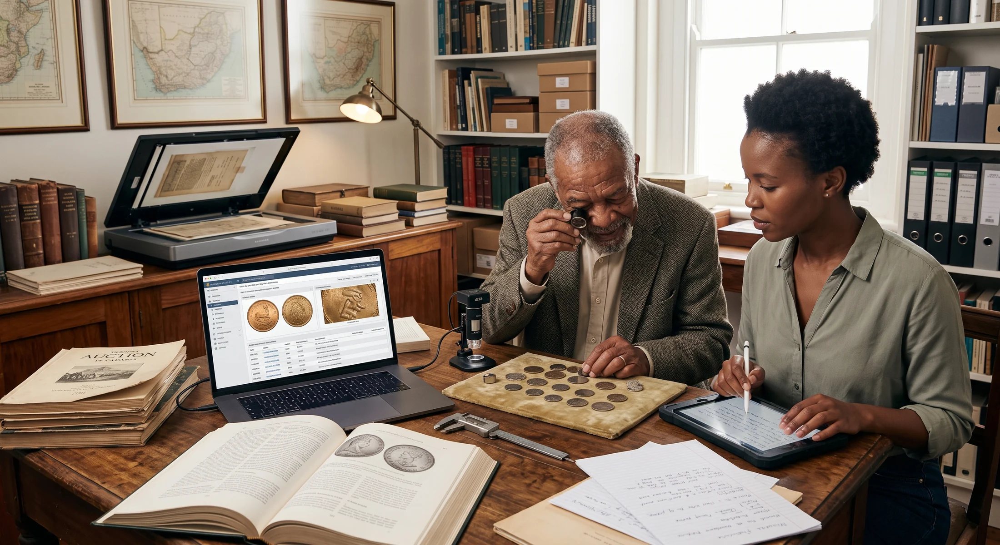

Object Story
A medal is a biography in metal.
The value of a group can live in the relationship between the object, the person and the surviving record.
ZA Collectibles / Knowledge Centre
Object stories, collecting guides, research notes and the small details that turn a thing into something worth understanding.
The value of a group can live in the relationship between the object, the person and the surviving record.

Certification is evidence, but the physical stone and its context still matter.

How thematic curation can turn a tired holding into something people want to explore again.

Small inconsistencies are often where the interesting questions begin.

Old notes, envelopes, receipts and photographs can materially change how an object is understood.

Order, context and visual coherence make a collection easier to understand, enjoy and pass on.
Questions worth asking
Often the combination of context, provenance, rarity, manufacture and the human story around it. An object does not need to be expensive to be worth understanding.
They can identify maker, material, place, date, issue, ownership or later alteration. They are often the fastest route from appearance to evidence.
Start with the whole object, then the reverse, edge, marks, inscriptions, labels and anything unusual. Context matters as much as beauty.